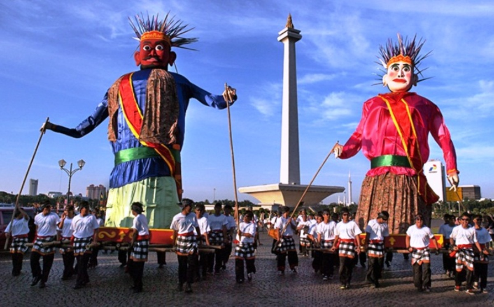

Mengenal Budaya Betawi: Tradisi, Kesenian, dan Adat Istiadat Jakarta

Asal usul
Suku Betawi adalah kelompok etnis Austronesia yang merupakan penduduk asli kota Jakarta dan sekitarnya. Kemunculan istilah "Betawi" pertama kali pada abad ke-17 sebagai suatu komunitas masyarakat dari berbagai etnis Nusantara yang datang dan menetap di Batavia. Suku ini terbentuk melalui proses asimilasi dari berbagai budaya, termasuk Sunda, Jawa, Melayu, Bugis, Ambon, Manado, Makassar, Arab, Tionghoa, India, dan Eropa, sehingga menciptakan identitas budaya yang unik.
Di era modern ini, masyarakat dari berbagai suku bangsa, terutama suku Sunda, yang telah lama mendiami wilayah Jabodetabek, melupakan bahasa mereka dan beralih ke bahasa Betawi, bisa juga disebut orang Betawi. Meskipun mereka memiliki hubungan darah yang lebih dekat dengan orang-orang yang masih berbicara menggunakan bahasa Sunda di wilayah pinggiran, khususnya di Bekasi, Bogor, Depok, dan Tangerang.
Tradisi
1. Palang Pintu: Tradisi pernikahan Betawi yang menggabungkan silat dan pantun sebagai simbol perjuangan mempelai pria.
2. Nyorog: Mengantar makanan/bingkisan ke orang tua sebelum Ramadan atau Lebaran sebagai tanda hormat.
3. Ondel-Ondel: Boneka besar khas Betawi untuk perayaan, dulunya dipercaya menolak bala.
4. Lenong: Teater rakyat Betawi yang biasanya diiringi Gambang Kromong.
5. Roti Buaya: Simbol kesetiaan dalam pernikahan Betawi.
6. Kuliner khas: Kerak Telor, Soto Betawi, Gado-gado, dan Bir Pletok.
7. Gambang Kromong: Musik tradisional perpaduan budaya Tionghoa dan Betawi.
8. Rumah adat: Rumah Kebaya, Rumah Joglo, Rumah Gudang.
9. Pakaian adat: Baju Sadariah dan Kebaya Kerancang.
10. Pelestarian budaya banyak dilakukan di Perkampungan Budaya Betawi Setu Babakan.
Adat Istiadat dalam Pernikahan
Dalam pernikahan ada beberapa adat seperti lenong yang ditampilkan saat pernikahan, acara pembukaan jalan, dan juga pencak silat. Penjelasan lebih lengkap dibawah ini: Lenong adalah pertunjukan khas Betawi yang lucu dan menghibur. Dalam pernikahan Betawi, lenong kadang ditampilkan buat menghibur tamu supaya suasana jadi lebih ramai dan seru.
Pembukaan jalan adalah tradisi saat rombongan pengantin pria datang ke rumah pengantin wanita. Sebelum masuk, mereka biasanya saling berbalas pantun dan meminta izin untuk “membuka jalan” menuju pengantin wanita. Pencak silat biasanya ditampilkan saat pembukaan jalan. Atraksi ini jadi simbol bahwa pengantin pria datang dengan sungguh-sungguh dan siap mempersunting pengantin wanita. Selain itu, penampilan silat juga bikin acara jadi lebih meriah.
Kesenian
Keseniannya Biasanya Kalau di sini diadakan Tari-tarian lenong Betawi lalu, penca silat dan ada makanan juga Makanan Betawi juga Lenong adalah pertunjukan khas Betawi yang lucu dan seru. Ceritanya biasanya tentang kehidupan sehari-hari dan dibawakan dengan bahasa Betawi.
Pencak silat adalah seni bela diri tradisional yang juga jadi bagian dari budaya Betawi. Biasanya ditampilkan di acara adat, termasuk pernikahan. Betawi punya banyak makanan khas yang terkenal, seperti Soto Betawi, Kerak Telor, dan Asinan Betawi. Makanan-makanan ini punya rasa khas dan masih banyak disukai sampai sekarang.

Suku Betawi
Suku Betawi adalah kelompok etnis Austronesia yang merupakan penduduk asli kota Jakarta dan sekitarnya.
Baca Selengkapnya
Suku Cina Benteng
Masyarakat Cina Benteng adalah keturunan orang Tionghoa yang sudah tinggal di Tangerang sejak sekitar tahun 1407.
Baca Selengkapnya
Suku Batak
Suku Batak merupakan salah satu suku terbesar di Indonesia dan masuk ke dalam urutan ketiga setelah Suku Jawa dan Suku Sunda.
Baca Selengkapnya